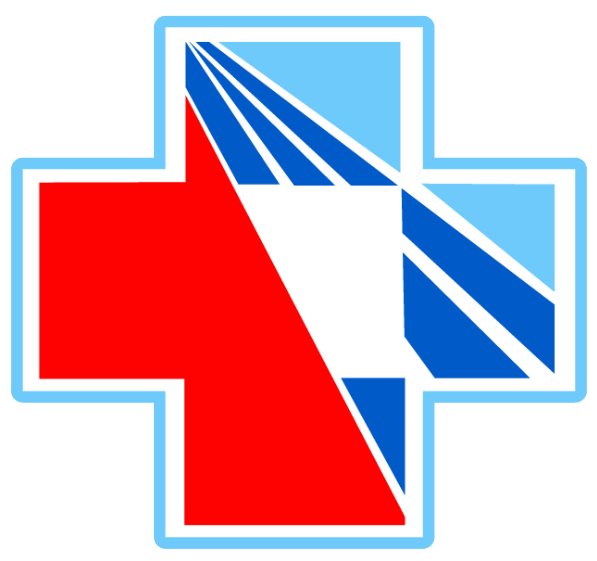
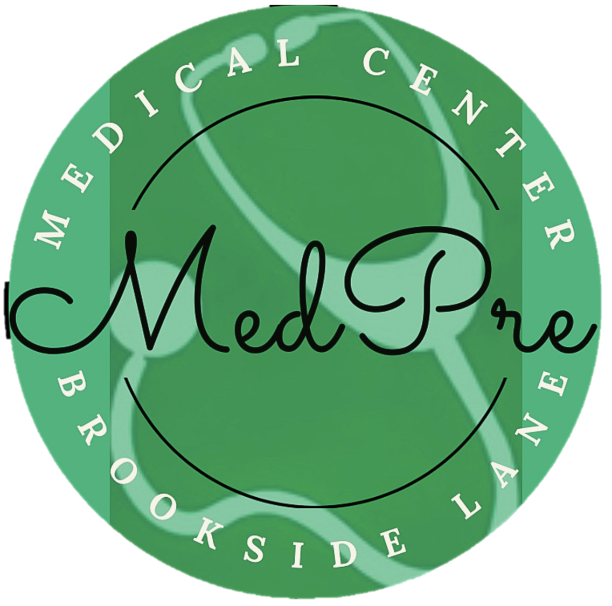
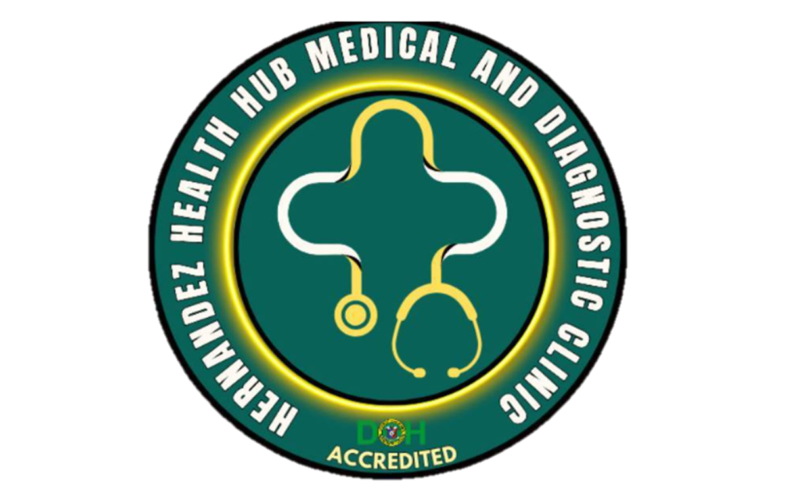
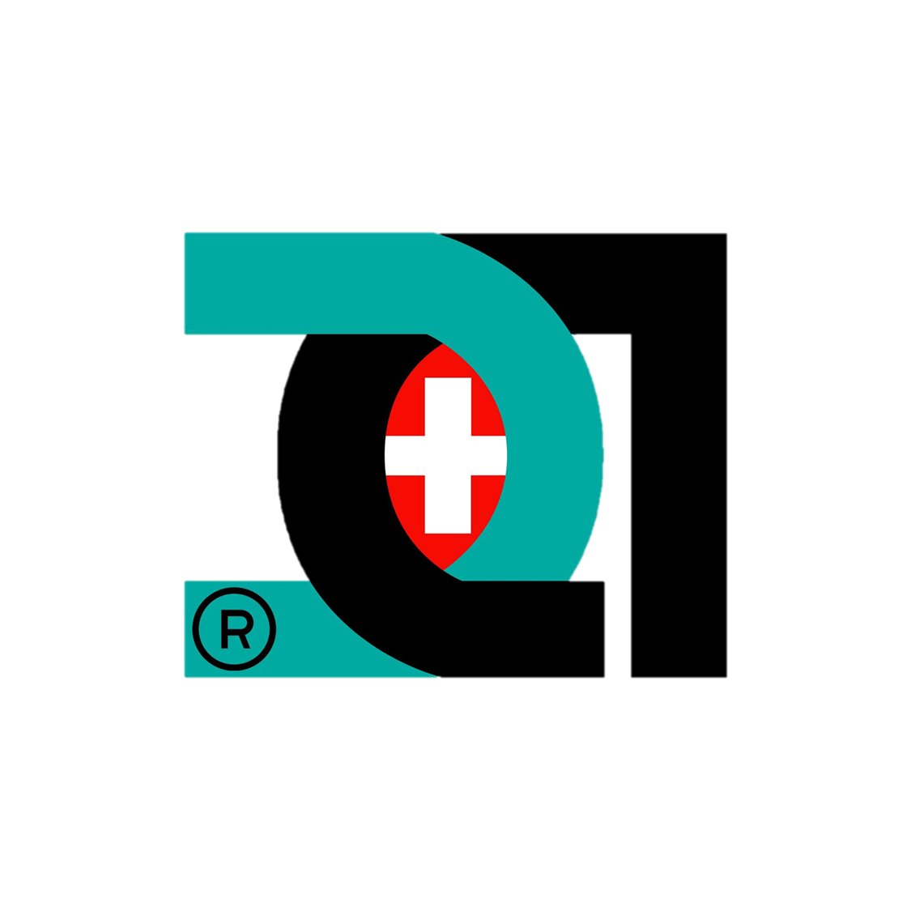

SPECIAL MENTIONS
Currently available free services from hospitals, clinics and health centers.
Medicard - Anabu Kostal, Aguinaldo Highway, Anabu II D, Imus, Cavite
- Medical Consultation
- Blood Typing
- ECG
- Chest X-Ray
- FBS/RBS Testing
- Dental Services

Divine Grade Medical Center - Antero Soriano Highway, General Trias,
Cavite
- Blood Typing
- Blood Glucose Testing
- Pregnancy Test
- Blood Pressure
- Monitoring

MPre Clinic - Brookside Lane San Francisco, General Trias
- Vital Signs
- ECG
- Urinalysis
- X-Ray
- Consultation
- General Medicine

Hernandez Diagnostic Clinic ME Gen. Trias Drive, Brgy. Tejero Rosario, Cavite
- Vital Signs
- ECG
- Urinalysis
- Blood Typing
- Blood Glucose Testing
- Pregnancy Test

DOC AID Diagnostic Center - First Grand Building, Molino, Bacoor
- Blood Typing
- Blood Glucose Testing
- Pregnancy Test
- Vital Signs
- ECG
- Urinalysis